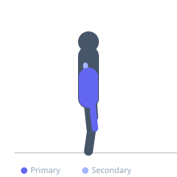
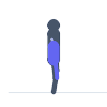

Exercise guide / L-Sit Progression
L-Sit Progression
A calisthenics isometric hold where the body is supported on the hands with the legs extended horizontally, forming an L-shape. The L-sit builds extraordinary hip flexor and core strength, tricep pushing endurance, and shoulder girdle stability simultaneously. Progressions range from tuck holds through full L-sit.
Primary muscles
iliacus
psoas major
rectus abdominis
Secondary muscles
transverse abdominis
rectus femoris
triceps long head
Stabilizers
internal oblique
external oblique
serratus anterior
Equipment
No Equipment (Bodyweight)
Optional
Pull-Up Bar (Wall-Mounted)
Dip Bars / Dip Station


Starting position
- Support your body weight on two parallel bars or the floor with arms fully extended beneath you. Legs are extended forward parallel to the floor.
Setup
- Use parallettes, the floor, or gymnastics rings. Ensure the support surface is at a height allowing the legs to extend without touching the floor.
Steps
- Step 1 (Tuck): Support the body on hands with knees pulled to chest. Hold for time.
- Step 2 (Single-leg): Extend one leg while tucking the other. Alternate.
- Step 3 (Full L-sit): Extend both legs forward parallel to the floor. Hold for maximum time.
- Step 4: Lower controlled and rest before the next set.
Coaching cues
- Push the floor away
- Point the toes and squeeze the quads
Breathing
- Breathe steadily throughout the hold. Do not hold your breath.
Range of motion
- Legs parallel to the floor. Arms fully extended. Body in an L-shape.
Tempo
- Isometric hold — build to 3 sets of 10-30 seconds
Common mistakes
- Allowing the hips to drop below the support — the hips must be at or above handle height
- Bending the elbows
Safety
- Build wrist and elbow strength before attempting this exercise
- Progress through the tuck stages before the full version
Training
- strength: 3–8 reps
- endurance: 15–25 reps
- strength: 3–5 sets
- endurance: 2–3 sets
- Rest: {'strength': 180, 'endurance': 45}